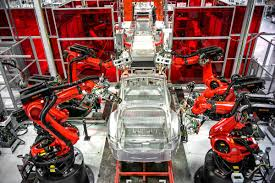
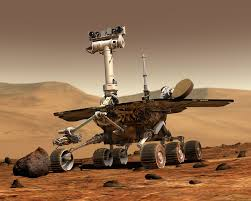

Present Uses
- Robotics are being used to make cars in factories.
- For example, Tesla is using mechanical arms to attach parts of a car to the base car model.

- They can be used to manage in the agricultural aspects too.
- They can monitor crop growth and health to see if they will keep growing or if they will wilter.
- Many robots are used in the space industry.
- They can pick up samples from different planets and see if there is life on the planet or if there is valuable minerals that are in the ground.
- It can also see if the air can support life or not.
- An example of this is the martian rover; it used solar panels to survive on Mars and took samples of the ground.
